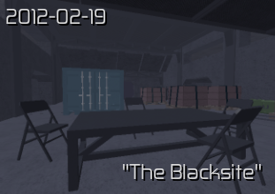
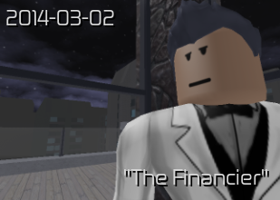
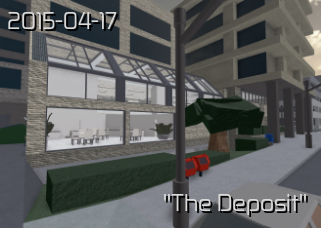
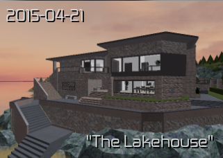
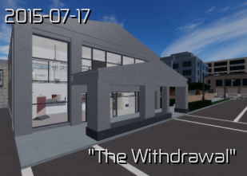
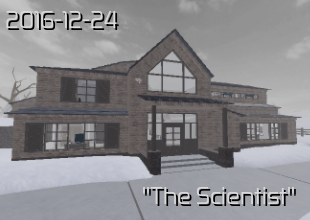
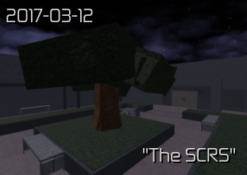
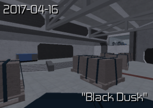

The blacksite is the first normal game mission in timeline order this can be played by defeating the withdrawal.In the
blacksite stealth you will need to go to the cell blocks undetected.Once you are in the cell block area you must find what cell rose in and use the control room to open the cell door.After freeing rose you will need to find the base commander that uses a black beret.In low difficulty after interogating the commander rose will do the rest in operative and above after interogating you will need to find the base commanders terminal.Once you finish hacking the base commanders terminal you may exit.in the blacksite loud you will need to do all above while being chased by enemies.After freeing rose in loud you do not need to interogate the base commander you will need to find the supply room and use the bombs for the AA guns.After the explosion you need to cover rose while she open the blact door.

The financier in this mission your objective is to either kill or extract ryan ross and get the safe open.There is not
many difference beetwen loud and stealth the difference is just in loud you will be chased by enemies and your escape is a helicopter instead of the ground.in loud if you did not kill ryan ross before he got to the safe room he will close the door which leaves you with 4 option either you drill it,use the keycard scrambler,use the blowtorch,or explode it.once opened you may kill ryan.Bagging ryans body and throwing it to the void will unlock you a dialouge of rose raging.

The deposit is the first mission you unlock when playing this game.In this mission there is 2 plans that you can pick which is
plan A
in this plan you will need to use the vault keycard obtained from the manager and the little safe.For the loud version you will need to hack both security station located in the top and bottom camera operator room.After that open the vault and get in.For stealth you can instantly open it but there is heat sensors which can be disabled by using the sensor shutdown objective which needs a silent drill after you drill at the spot rose told you to drill the sensors are downww and you can go in.Another way is the window of opportunity which give you the option to either shoot it or use a breaching charge exploding with c4 or granade works at the cost of failing stealth.once the transformer is sabotaged it will give you an ammound of time depending on the difficulty.in Plan A you can grab the extra cash if you want if not its alright.
Plan B
in plan b you will use the thermite at the back of the bank to go to the vault.This is for loud but you can do this in stealth but its hard and you cant get the bonus cash so i dont see why would you do this in stealth.once the thermite is planted go away from it if you are close you will burn to death then wait for it to finish.Once finished you can get in the vault and grab the objective and get out.You wont use the normal escape which is the van you wiwll need to plant another thermite in the lobby.When the thermite is done you can get in the hole and open the 2 doors which lead to an underground train rails you will be provided motor bikes to escape.

The lakehouse
The lakehouse is the mission where you infiltrate a phoenix base your task is to get intel from the server room in the basement you can use the code or use explosive in loud you can also use the thermite.You can get the code from files around the house.The operatives here have auto radio which mean neutralizing an operative in any type of way will trigger a radio this can be turned of by neutralizing the head of security.The head of security is a random operative inside the house you can either test your luck by knocking random operatives or interogate the camera oerator that will give you the head of security objective showing who is the head of security.Bewawre of the timer in stealth since ina certain time if you are to slow steel cove will begin the assult the time of the assult starting is depending on difficulty.In loud if you have put all the servers in boat u must takedown the gunship first.Once the gunship is down you may escape

The Withdrawal
On this mission you will rob a bank that you have once robbed as a halcyon operative(The auction from The Night Heist Expansion) but this time you are a pheonix operative because halcyon betrayed you.This bank has a vault that can only be opened by the manager the vault has the money of halcyon.This bank is also the one halcyon use for money laundry.On this mission you must disable the metal detector by using a power box.Before that you must hack into the server room that spawns in 1 of 5 different rooms.Once hacked in profesional and below it will instantly tell you what power box to disable in operative and elite you need to inspect power boxes to know which can shutdown the metal detector however in legend there is a chance you will need to interogate and employee first to know which power box to disable if the employee in knocked/killed you do not fail the mission instead you will need to guest which is correct if you get the wrong one the alarm will start.Once metal detector is dow you can grab the disguise in the van then talk to the manager.Cishato have hidden a little easter egg if you impersonate ryan ross from the financier the dialouge change from Alex Shaw to Ryan ross.Once you talk to the manager he will lead you to the vault where there will be 2 guardsyou need to hostage all guards and the manager but do not knock/kill the manager make him/her open the vault first then you are allowed to kill/knock.If you knock/kill the manager to early you will instantly fail stealth.Once the vault is open you need to open 2 more little cells can use any gear besides the c4 a normal drill is usable but it lures npc near the vault whether its a guard or employee but the best way to open is to use a breaching charge.Once opened you will have to move all the cash into the van but in operative and above an employee will be checking on the vault every few minutes.Once all cash is in the van you may escape.In the loud way you will need to explode into the vault then assemble the cage then put all cash in there then wait for sparrow.Once sparrow has arrived you can hook the cash to the helicopter and escape

The Scientist
In the scientist mission there will always have the same ammount of npc no matter the difficulty
Inside Operatives
Outside Operatives
Falcon
Operatives(Guarding Rivera)
Control Room Operatives
Rivera
4
3
1
1
3
1
In here once you have knocked a single operative a 5-4 minute timer will start the time is depending on difficulty the only way to stop the timer is to neutralize the control room.knocking Falcon will trigger another alarm that occurs faster.If anymore operatives gets neutralized the timer will be shorter.There is 3 ways to get Rivera out
1.open with the keycard that can be dropped by Falcon or the second in command
2.open a little window with a screw driver and shooting the guard inside (once the window open if you shoot the guard to late you will get alerted)once shot give rivera both screwdiver and wire cutter and open the door for her
3. use a thumper/c4 (note:using the thumper/c4 to open the cell before screwdriving a window will instantly kill rivera)
Once rivera is out in stealth you will have to neutralize every operative including falcon Then you may saftely get out.In loud after rivera is out/dead you have the option to take falcons usb or hack the control room.Using the usb will take up to 5 minutes however hacking is faster the base time of hacking is 4 minutes can be speedup by speedhack perk.While the control room is being hacked you must protect the 2 power boxes the inside and outside.In high difficulties such as legend protecting the outer power box is top priority because turning it back on will cost you a lot of health and medkits.If the power boxes are down the hack will be stopped and you must turn it back on.

The SCRS
In the SCRS you will be infiltrating a canadian agency building.At spawn you will have 3 janitors guarding (4 on legend and elite) and 3 cameras.once janitor is killed you will need to get a guard disguise as janitors cannot go out of spawn area wiwthout tresspassing (neutralizing a guard in any from of way will start a 10minute timer if you do not neutralize the control room before the 10 minute timer end the control room will get alerted).In the building there will be 2 agents,agent nighshade and agent hemlock both has a raven and a keycard but only one of them have the usb(note:in any difficulty beside legend you can use a keycard scrambler to get in to special room and open the safe inside the safe will have a raven and a usb (usb does not spawn on legend)).You will also need a special keycard which can be obatined throught a safe in the tech room and the head tech.Once you have the tech keycard you can open the servers and hack them 1 by 1.In the first server an analyst computer will be pinged you need to authorize so you can proceed the hack.In the second server nothing will happen the best way to continue is to rush the 3rd server and hack.In the 3rd server you will have to put a usb to proceed once a usb is put go back to spawn and its finish.In loud you do not need to find the analyst or usb you just have to protect the power box and deal with the helicopter.The helicopter has a weaponary of 2 missiles and 1 machine gun.Once the chopper is down you may escape.

Black dusk
In the black dusk the mission tactic is voted during the begining.
Stealth
In the stealth gamemode you will be disguised as a military buyer.Infront of spawn somone will greet you after a little talk he/she will lead you to a traning range with target on the way there you will find a suppresed up9 and a lockpick(below operative only).In the training range there will be a non suppresed shotgun and in there you can knock the guard and take a disguise.After this you will want to hide the body and proceed to recover the bombs and if you can hack the cams once cams are hacked no guard can use it hacking cams is not suspicious but rather conspicious.After getting the bombs you can start with 3 different areas.After all thoose area have bombs planted you need to plnt bombs at the front area beware of guards looking as they will raise the alarm
Development
The development area there is a server room whwere you need to plant the bombs.getting in the server room is possible by these equipments (c4,thumper,blowtorch,breaching charge,drill,high security keycard).In stealth you cannot use any item beside the silent drill(must have the precicion drilling perk)and keycard as it will alert anyone else(note:a high security keycard is not hackable with the keycard scrambler).The high security keycard can be obtained from the head programmer which can be identified from either files or interogating other programmer.
Operation
The operation area has the elite operative room that has 6 elite operatives.The elite operative room also have a vault keycard and a computer that can be hacked for the vault code.There is also an armory that has a thermite(below operative) there is also a staircase to the basement that has lockpicks,keycard scrambler,thermite,weapons,and frontline armor.
Workshop
The workshop is the area where the vault is located.There is only 3 methodes to get into the vault (diamond drill,having the vault code and the vault card,thermite).If you do not have a hacker class teamate in loud then use the thermite as it is more efficient it only cost 6 inventory slots and does not slow you down.The diamond drill however at the cost of mobility and 12 inventory slots with slower breaking speed then the thermite.In stealth you can interogate one of the techs for code or the head tech
Loud
In loud as you do the objective halcyon operatives are constantly attacking you.at spawn you will need a blastdoor that can be opened after the panel is activated.Once the blast door is opened you will have to enter the areas but there is 2 option to get in.Option 1 is using the panel in the camera room which can open 1 sector at a time.Option 2 is to use vents,vents take some time because of the blowtorch you will need to blowtorch 2 areas if you see iron bars.Once all bomb is planted you plant the front part of the bunker.Once you went to the elevator you will see in your objective(Exfiltrate-failed)once you see that sign get out and find cover because tehre will be a bossfight.The boss is called The onyx unit he has a lot of hp,a minigun,and a huge spread.The onyx unit is very resistant to explosive and he also cannot move.The onyx unit can kill faster the closer you are.Once the onyx unit is dead you may escape.